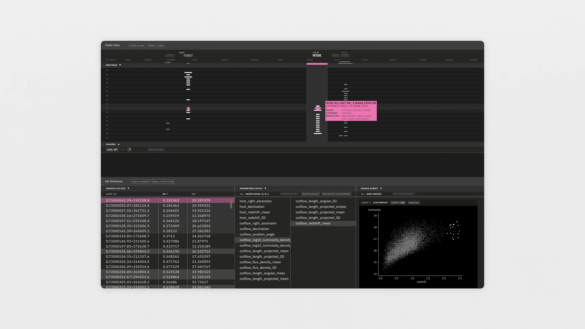

Digital Sky Surveys
A research prototype developed with Caltech astronomers, exploring how to navigate image and tabular data in a shared workspace.
Challenge
Astronomers and astrophysicists compare candidate objects using images from sky surveys and derived tabular measurements. Today, image inspection and quantitative data analysis work happens in separate tools, requiring manual copy-pasting position coordinates to retrieve imagery. This ten-week research prototype explored a shared workspace to close the gap.

Scope
How to absorb enough astrophysics terminology and gain a sense of scientists’ methodologies within ten weeks? I spent the first seven weeks in conversation with our science partners, radio astronomers at Caltech who worked across three subdomains, to clarify shared approaches and position the project within their methodologies. During the final three weeks I ran co-design sessions and iterative user-testing to validate the prototype.
Discovery
a bit on sci comm


Solution
[From expert workflow to interface]
[“Image artifacts can affect catalog measurements.”
→ Operationally: researchers need to verify a candidate against its source imagery.
→ Design requirement: keep image evidence and its catalog measurements in the same investigation context.
→ Interface response: image and catalog views appear together in the prototype.]
[“The same sky region is observed at different frequencies and times.”
→ Operationally: a candidate can look different across surveys and releases.
→ Design requirement: make survey coverage and frequency context visible during comparison.
→ Interface response: the prototype maps survey availability over time and frequency.]
[“Researchers select parameters from personal expertise and intuition.”
→ Operationally: the useful measurements depend on the question being explored.
→ Design requirement: let researchers choose a shortlist of parameters for visualization.
→ Interface response: researchers select parameters before mapping candidate objects.]
A frontend UX probe in Figma based on close observation of researchers’ working methods and habits. The probe makes explicit the availability and coverage of public sky survey data over time and frequency, and incorporates a dimensionality reduction flow so that researchers can define potential objects of interest, drawing from personal expertise and intuition.


Influenced by the interaction affordances of Rubik’s cubes and video game navigation, the probe enables locking navigation on either time or frequency to view potential objects systematically. Each row of images correlates to an individual potential cosmic object for direct comparison. Additional features enable close-up zooming in on images.

[What the probe established]
[The prototype and stakeholder sessions explored a shared interface for comparing survey images, catalog measurements, and data coverage. It was presented to the broader research group and prompted discussion of possible next directions.]
[What remained unresolved]
[This was a Figma research probe, not a production implementation. It did not establish the prototype’s effect on research outcomes or long-term workflow efficiency. A next iteration could investigate how researchers use these linked views during a specific analysis task.]
Impact
Designed as a UX probe rather than a production deliverable, the prototype unites fragmented, high-dimensional survey data into a single interface via the locking affordance. Validated by our Caltech stakeholders and later presented to their broader research group, the work opened up a follow-up conversation about future directions and opportunities for LLM integration to make researcher workflows and analysis more reproducible.